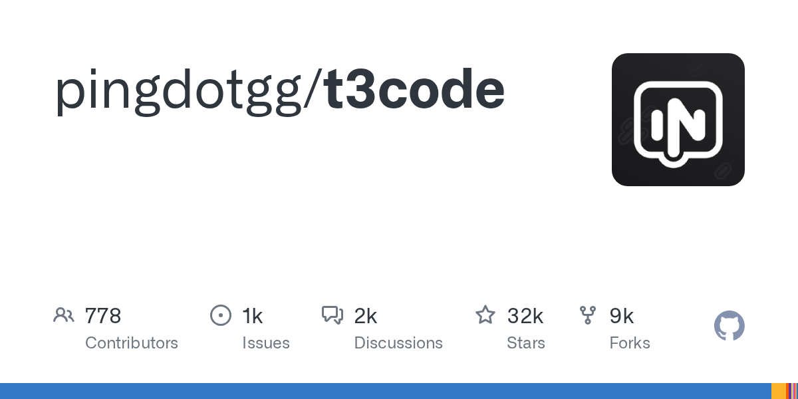
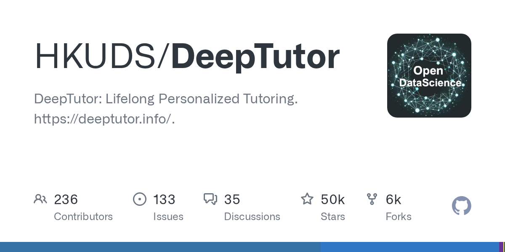
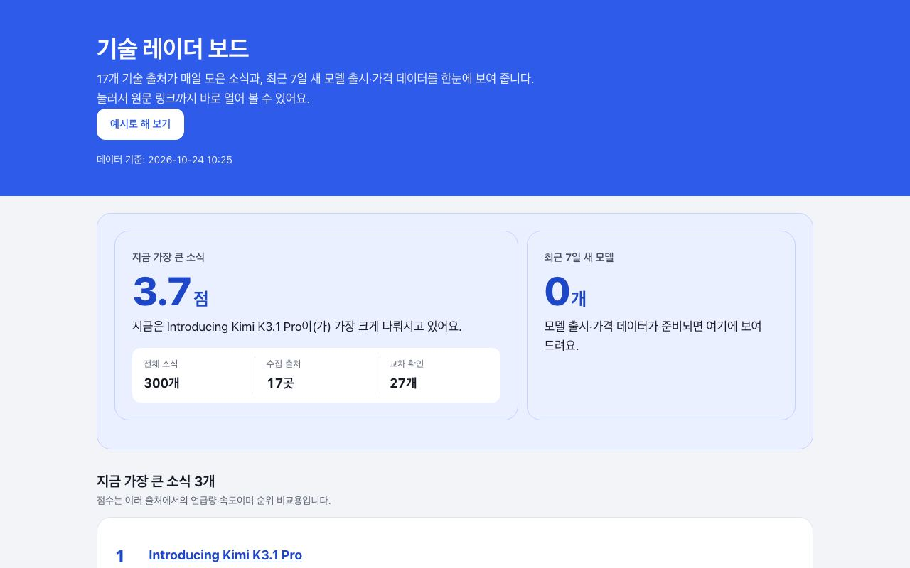

하루 한 모금,
오늘의 기술 소식
화제가 된 오픈소스와 AI 도구를 직접 받아서 돌려 보고, 1분 쇼츠와 글로 남깁니다. 모든 숫자에는 원문 근거를 답니다.

Lightpanda, 크롬 대신 쓰는 AI용 헤드리스 브라우저 — 받아서 직접 살펴본 기록
Lightpanda는 크롬과 별개로 Zig로 처음부터 새로 짠 헤드리스 브라우저로, AI 에이전트와 자동화 수집을 주로 겨냥한다. 크롬보다 가볍고 빠르다고 내세우지만, 나는 설치하지 않고 소스 코드를 받아 읽는 데까지만 직접 확인했다.
글 읽기 →최근 글
전체 보기 →
Claude Code·Codex, 폰에서 원격으로 돌리는 오픈소스 T3 Code — 직접 받아서 해봤다
로컬에 깔아둔 AI 코딩 도구를 스마트폰·웹·데스크톱 앱에서 원격으로 다루게 해 주는 오픈소스다. 설치 없이 저장소만 받아 코드를 읽었고, 핵심 기능 2가지를 직접 돌려봤다.

DeepTutor: AI 개인 튜터 오픈소스, 설치 없이 받아서 돌려 봤다
강의 자료를 넣으면 질의응답과 퀴즈를 만들어 주는 AI 튜터 "DeepTutor"를 받아, 설치하지 않고 복습 계산 코드만 따로 떼어 돌려 봤다.
117,803개 스타 거래 에이전트 TradingAgents를 설치 없이 뜯어봤다
트레이딩 회사의 업무 흐름을 AI 에이전트로 옮겨 놓은 오픈소스다. 직접 받아서 코드를 읽고 일부를 돌려 봤다. 이 프로젝트에서 눈여겨볼 부분은 실제 거래보다 "과거 결정을 기록해 두고 나중에 검증하는" 설계였다.
repo-proof: 오픈소스 README 주장을 코드 판정으로 검증하는 도구, 직접 받아 돌려 본 기록
repo-proof는 "이 저장소의 README가 실제로 맞는가"를 기계로 판정하는 도구다. 설치 없이 저장소만 받아서, 인터넷이 끊긴 환경에서 읽을 수 있는 부분만 읽었다. 그러다 판정 로직에서 다중 줄 정규식 결함 하나를 재현했다.
AI 글의 지어 낸 숫자를 잡는 numguard, 설치 없이 직접 돌려 봤다
AI가 자료를 보고 쓴 글에서 숫자·이메일·URL이 정말 자료에 나오는지 모델 없이 대조해 주는 Python 도구 numguard를 받아 봤다. 설치하지 않고 로컬에서 코드를 읽고 돌려 본 기록이다.
앱 실험실
앱 12개 전체 보기 →
기술 레이더 보드
17개 기술 출처가 매일 수집한 기술 소식 데이터를 받아, 지금 가장 큰 소식 3개와 점수·최신순 소식 목록을 대시보드에서 보여주는 앱입니다.
앱 써 보기 →25개 모델
맥에서 직접 잰 로컬 AI
내 맥에서 어떤 AI 모델이 돌아갈까? 48GB 맥에서 인기 로컬 모델 25개를 직접 돌려 답 쓰는 속도·메모리·한국어 점수·도구 호출·코딩을 쟀습니다. 같은 기준으로 비교할 수 있게 정리했어요.
실측표 보기 →커밋 한 모금
기술 소식. 오늘 뜨는 오픈소스·AI 모델을 1분 안에. 원문 화면과 직접 돌려 본 결과까지.
영상 보기 →실험 한입
생활 실험. 궁금한 걸 AI 3개한테 물어보고, 정답은 공개 데이터로 직접 계산해 확인합니다.
영상 보기 →